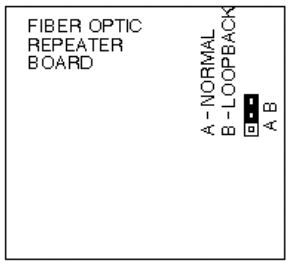
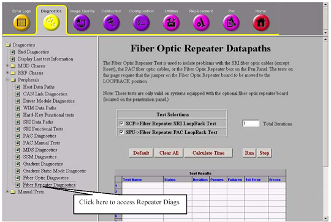

Operating Documentation
Direction 5133315-3, Rev# 14
Signa EXCITE HD 1.5T Service Methods
Module Version 1.0, Version Date 5/3/07
Operating Documentation |
| Required Persons | Preliminary Reqs | Procedure | Finalization |
|---|---|---|---|
| 1 | Not Applicable | 45 mins | Not Applicable |
For systems with a Fiber Optic Repeater at the Penetration Panel, the Fiber Optic Repeater test is provided to test lines between the System Cabinet and the Fiber Optic Repeater Board (except SRI Reset). When the test runs, the STIF sends a data pattern out to the Fiber Optic Repeater Board, and verifies that the exact same data is looped back to the STIF. Any mismatches indicate that either the loopback jumper is not set, or there is a fault in the lines between the STIF and the Fiber Optic Repeater Board.
Set loopback jumper in the Fiber Optic Repeater Board (PP1A17A1) located on the equipment room side of Pen Panel, to Position "B" (Loopback). See Illustration 1.
Illustration 1: FIBER OPTIC REPEATER BOARD LOOPBACK JUMPER

To start the Repeater Board Loop back check, on the Service Browser Diagnostics Tab, click the Fiber Repeater Diagnostics link. Run both tests. See Illustration 2.
Illustration 2: FIBER OPTIC REPEATER DIAGNOSTICS

An error is logged if any of the following conditions occur:
A fiber optic line between the STIF board and the Fiber Optic Repeater is defective (this test does not include the SRI Reset fiber optic).
The system does not have a Fiber Optic Repeater.
The loopback jumper at the Fiber Optic Repeater is NOT in position "B".
The Fiber Optic Repeater board is defective.
Set loopback jumper in the Fiber Optic Repeater Board back to position “A”.
Do a test scan before customer turn over.